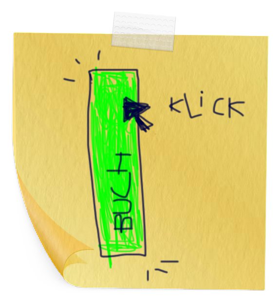

Whole Earth Catlogue
The Whole Earth Catalog (WEC) was an American counterculture magazine and product catalog published by author Stewart Brand several times a year between 1968 and 1972, and occasionally thereafter, until 1998. The magazine featured essays and articles, but was primarily focused on product reviews. The editorial focus was on self-sufficiency, ecology, alternative education, "do it yourself" (DIY), and holism, and featured the slogan "access to tools". While WEC listed and reviewed a wide range of products (clothing, books, tools, machines, seeds, etc.), it did not sell any of the products directly. Instead, the vendor's contact information was listed alongside the item and its review. This is why, while not a regularly published periodical, numerous editions and updates were required to keep price and availability information up to date. In his 2005 Stanford University commencement speech, Steve Jobs compared The Whole Earth Catalog to "a sort of Google in paperback form, before Google came along."
Source:
https://en.wikipedia.org/wiki/Whole_Earth_CatalogInternet Archive
The Internet Archive is an American non-profit organization founded in 1996 by Brewster Kahle that runs a digital library website, archive.org. It provides free access to collections of digitized media including websites, software applications, music, audiovisual, and print materials. The Archive also advocates a free and open Internet. Its mission is committing to provide "universal access to all knowledge". The Internet Archive allows the public to upload and download digital material to its data cluster, but the bulk of its data is collected automatically by its web crawlers, which work to preserve as much of the public web as possible. Its web archive, the Wayback Machine, contains hundreds of billions of web captures. The Archive also oversees numerous book digitization projects, collectively one of the world's largest book digitization efforts.
Source
https://en.wikipedia.org/wiki/Internet_ArchiveInformationsnetzwerke
Cyber Feminism Index
Hackers, scholars, artists and activists of all regions, races and sexual orientations consider how humans might reconstruct themselves by way of technology When learning about internet history, we are taught to focus on engineering, the military-industrial complex and the grandfathers who created the architecture and protocol, but the internet is not only a network of cables, servers and computers. It is an environment that shapes and is shaped by its inhabitants and their use. The creation and use of the Cyberfeminism Index is a social and political act. It takes the name cyberfeminism as an umbrella, complicates it and pushes it into plain sight. Edited by designer, professor and researcher Mindy Seu (who began the project during a fellowship at the Harvard Law School's Berkman Klein Center for the Internet & Society, later presenting it at the New Museum), it includes more than 1,000 short entries of radical techno-critical activism in a variety of media, including excerpts from academic articles and scholarly texts; descriptions of hackerspaces, digital rights activist groups, bio-hacktivism; and depictions of feminist net art and new media art.
Daten als Wärung
Seit langem bereits werden etliche Online-Angebote den Nutzern ohne Zahlung eines Geldbetrages angeboten. Beispiele hierfür sind Social Media Plattformen wir Facebook, Spiele-Apps oder auch die Artikel der diversen Zeitungsverlage. All diese Unternehmen erzielen dennoch teils erhebliche Umsätze und Gewinne. Diese werden in vielen Fällen (auch) mit der Weiterverwendung der Nutzerdaten erzielt. Beispielsweise werden im Rahmen der Nutzung ermittelte persönliche Interessen für passgenaue Werbung genutzt, diese Werbeplätze werden entsprechende vergütet. Die Nutzer „bezahlen“ die Angebote in den beschriebenen Fällen mit ihren Daten, die den Anbietern wirtschaftlichen Erfolg bringen. Diese personenbezogenen Informationen werden so zur Währung.
Quelle:
https://digitalisierungsrecht.eu/bezahlen-mit-daten/Sci-Hub
Sci-Hub is a library website that provides free access to millions of research papers, regardless of copyright, by bypassing publishers' paywalls in various ways. Unlike Library Genesis, it does not provide access to books. Sci-Hub was founded in Kazakhstan by Alexandra Elbakyan in 2011, in response to the high cost of research papers behind paywalls. The site is extensively used worldwide.In September 2019, the site's operator(s) said that it served approximately 400,000 requests per day. In addition to its intensive use, Sci-Hub stands out among other shadow libraries because of its easy use/reliability and because of the enormous size of its collection; a 2018 study estimated that Sci-Hub provided access to most of the scholarly publications with issued DOI numbers. On 15 July 2022, Sci-Hub reported that its collection comprised 88,343,822 files. Since December 2020, the site has paused uploads due to legal troubles.
Source:
https://en.wikipedia.org/wiki/Sci-Hub